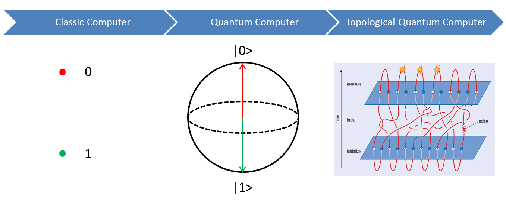

Scientific background
Condensed matter physics is a branch of physics that investigates the collective and cooperative phenomena based on many-body interaction in the “condensed” (i.e. liquid and solid) phases of material. The study of quantum physics in condensed matter physics is always challenging, because the interaction of particles, as well as of particles and environment, will destroy the quantum state to some extent. To measure and manipulate individual quantum systems, one has to reduce the many particle system to a system with single particle following Schrödinger equation. This single particle (usually a quasiparticle), is not only isolated and weakly interact with its surrounding, but also effected by the other particles through en effective potential energy. It turns out its wavefunction represents the interplay of the quantum physics and collective behaviour. To build such a quasiparticle system, artificial quantum device in nano- and mesoscopic- scale has been developed, in combination with semiconductor, superconductor and magnetic materials. Advances in such hybrid quantum device architecture has resulted in various fundamental discoveries, such as novel phases of matter, e.g. the superconducting to insulating phase transition in 2D materials, and mesoscopic technological inventions including quantum dots, transistors, integrated circuits and so on. The development of state-of-art provides great flexibility for the hybrid quantum device architecture and lead it to the design for specific functionality. One famous example which plays an important role in modern condensed matter of physics is the quantum computer with different hybrid systems.
The conceptual, material and technological breakthroughs can always lead to the development of condensed matter physics. In 2016, the Nobel prize in Physics has been rewarded to David J. Thouless, F. Duncan M. Haldane and J. Michael Kosterlitz for theoretical discoveries of topological phase transitions and topological phases of matter. They use the concept of topological phase to unifiedly explain the previous experiment in different system, e.g. quantum hall effect, superconductor, superfluid, thin magnetic film and so on. Over the last decade, topological material has been an exciting frontier in condensed matter physics. They can induce not only the new generation of electronics and spintronics, but also the potential application in quantum computer, namely topological quantum computer.
A classic computer is built on bits, where each bit has two states: 0 or 1. Based on quantum mechanical two-level system, the quantum computer has a unit of qubit whose state could be described by α0 |0>+α1 |1>(α02+α12=1) .The two-level qubit is usually presented by the Bloch sphere sketched in figure 1 whose north and south poles correspond to |0> and |1> respectively. The qubit state could be in any superposition of the two states, meaning any vector in the Bloch sphere. Mathematically, |0> and |1> are taken into the basis of the two-dimensional Hilbert space and the superposition could be described by the Hilbert space. Therefore a system of N qubits would then be described by the N-fold tensor product of the two-dimensional Hilbert space, resulting in the exponential growth of the dimension of Hilbert space (2N). But the quantum states are susceptible to decoherence due to e.g. noise, which is one of the main problems for quantum computer. Topological quantum computer is a new type of quantum computer whose states depends on braiding and combining (fusing) non-Abelian-anyons, e.g. Majorana fermions. Non-abelian anyons is a type of anyons whose interchange changes the state of the system, rather than only brings a phase of zero(boson), π(fermion) or arbitrary (abelian anyons). The subsequent state depends on the order in which they are exchanged, and their world lines pass around one another to form braids in a 2+1-dimensional spacetime. The process is only related to braiding trajectories, which has special topological properties and is impervious by the details, thus called topological protection. The local gate based on the braiding is stable and ideally, topological quantum computer is robust against noise (right panel in figure 1). Recently, people use the even and odd parities of the quasiparticles as the two quantum states to build a topological qubit.
Figure1. Evolution of classic computer, quantum computer and topological quantum computer. The sketches of bit, qubit and topological operation are shown from left to right in the bottom row.
Advanced research strategies
Nanowire with strong spin-orbit coupling and the perpendicular Zeeman field has a pair of branches with the helical energy dispersion. Once proximitized with a induced gap by the parent S-wave superconductor, its band structure will be inverted, resulting in pairs of Majorano zero modes with each located at the end of the nanowire. The entire system is protected by the topological order. A hard induced superconducting gap without any quasi-particle state inside is crucial to create the topological protection. Thus, it is important to avoid the disorder or defect at the interface of the nanowire and superconductor, as well as other part of the system. The Traditional way to fabricate an (S)NS junction on nanowires always involves resist or etching which might leave residues or cause damage. A new technique which creates a natural (S)NS junction by shadowing effect is reported, and the ballistic superconductivity is found in such system(figure 2A)[1].
A Majorana island is a superconducting quantum dot with a pair of Majorana zero modes with each located at the two ends. The energy states of condensate and Majorana zero modes are lifted by the charging energy of the island. Electron tunnelling into one Majorana zero mode will tunnel out of the island through another Majorana at another end, no matter how far away the two Majoranas are. This is called teleportation. By the charging periodicity with respect of the gate, Majorana zero modes can be detected. Majorana island is not only a way to detect Majoranas, but also the building block for the topological qubit. Simply speaking, the two states of the topological qubits are the occupancy (odd parity) or non-occupancy (even parity) of Majorana zero modes. The parity readout of two Majorana islands constitute of the Bloch sphere of the qubit. The parity of a Majorana island have been studied[2] (figure 2B) and the phase diagram of the even-odd parity transition in parallel magnet field, which might be related to topological transition, also has been mapped out[3].
To make topological qubit and scalable circuits, devices created by the shadowing effect through smart walls have been developed (figure 2C&D). In such a way, fabrication steps are performed before the growth or deposition of the nanowires, so ideally avoid inducing any disorder for the hybrid and scalable circuits. And topological qubits based on multiple islands embedded in the loop are interesting projects. We will work on in the near future[4, 5].
Figure2: Scalable topologicalqubits based on ID system(A) Shadowed Al-lnSb hybrid device with atomicresolution interface, The ballistic superconductivty has been measured here[1], (B) The sketch of majorana island with two red points at the end of nanowire, indicating Majoranas with parallel magentic field. 2e-le periodic coulomb oscillation transition in paralle magentic field has been measured[2].(C) Different devices for Majorana signature and topological qubit made from shadowing effect of smart walls. Typical smart walls are indicated by 'SW' and top gates are indicated simple sketches by 'G'are Thealso drawn in the rightbottom corner, with nanowires in green, Al in blue, normal contact In yellow and Majoranas in red, (D) The sketches for Majorana box qubit (left) and the following scalable topological qubit circuits (right) [4]
Reference:
[1] Gazibegovic S, Car D, Zhang H, et al. Epitaxy of advanced nanowire quantum devices. Nature 548(7668),434 (2017)
[2] Shen J, Heedt S, Borsoi F, et al. Parity transitions in the superconducting ground state of hybrid InSb-Al Coulomb islands[J]. Nature Communications 9,4801 (2018)
[3] Phase diagram of Majorana island
[4] Plugge S, Rasmussen A, Egger R, et al. Majorana box qubits[J]. New Journal of Physics 19(1),012001 (2017)
[5] Schrade C, Fu L. Andreev or Majorana, Cooper finds out. arXiv:1809.06370, 2018.
Different from 1D nanowire which need exterior magnetic field to create the helical gap, 2D and 3D topological insulator is intrinsic topological insulator with helical edge or surface states due to the strong spin-orbit coupling. The helical edge/surface state have spin-momentum-locked property and thus are dissipationless because the absence of backscattering. Recently, WTe2 is found to host QSHE experimentally[1]. When partly tuned by the electrostatic gate, Majorana zero modes could be created at the terminals of 1D edge state(figure 3A3))[2]. RF SQUID is also a good tool to study the 4π-periodic Josephson junction based on QSHE(figure 3A4))[3].
By time-reversal symmetry breaking, chiral edge states show up and is known as QAHE[4]. Considering the Majorana zero modes here is immobile, a main point for the braiding proposals on this system is to how to fuse the immobile Majorana zero mode without exchanging them in the real space. One interesting proposal is to use the vortex driven by the voltage bias(figure 3B3))[5]. Thus the fusion of Majorana zero mode will induce a charge in the second Josephson junction.
Figure 3: Different Majorana devices based on 2D system (A) Majoranas in QSH system:1) A candidate for QSH : WTe2 monolayer; 2) The quantized edge state measured in this system [1]; Two sketches to create ID system in 2DTI by gate 3)[2] or flux 4)[3] (B) Majoranas in QAH system:1) A candidate for QAH :Cr0.15(Bi0.1Sb0.9)i85Te3; 2) The quantized edge state measured in this system [4]; 3) A sketch to fuse Majorana zero modes on the ID edge state [5]
Reference:
[1] Wu S, Fatemi V, Gibson Q D, et al. Observation of the quantum spin Hall effect up to 100 kelvin in a monolayer crystal. Science 359(6371): 76-79 (2018)
[2] Alicea J. New directions in the pursuit of Majorana fermions in solid state systems[J]. Reports on progress in physics 75(7): 076501 (2012)
[3] Fu L, Kane C L. Josephson current and noise at a superconductor/quantum-spin-Hall-insulator/superconductor junction[J]. Physical Review B 79(16): 161408 (2009)
[4] Chang, C. Z.*, Zhang, J.*, Feng, X.*, Shen, J.*, Zhang, Z., Guo, M., ... & Ji, Z. Q. Experimental observation of the quantum anomalous Hall effect in a magnetic topological insulator. Science 340(6129), 167-170 (2013)
[5] C.W.J. Beenakker, P. Baireuther, Y. Herasymenko, I. Adagideli, Lin Wang, A.R. Akhmerov. Deterministic creation and braiding of chiral edge vortices. arXiv:1809.09050
On the surface state with 3D topological insulator, there could be both 0D Majorana bound state and 1D chiral Majorana mode. The S-TI-S junction shown in figure 4A preserve such a 1D Majorana mode when the phase difference between the two superconductors is π[1]. By connecting the two superconductor with a loop, an RF SQUID form and can control the Majorana modes open or close by exterior flux(figure 3B])[2]. In the center of a trijunction where the 1D modes merge, a 0D Majorana mode shows up when the phase differences between superconductors fit some special values, as called the phase diagram(figure 4C)[1]. This 0D Majorana mode could be transported to another trijunction through the 1D channel, so a pair of Marajoana can fuse. In the trijunction network, Majorana could be braided.
Strong induced superconductivity and Fraunhofer pattern has been measured in the Josephson junction(figure 4A)[3]. RF SQUID experiment is also being performed[4]. By applying different current to the terminals of trijunction, a phase diagram could be realized. But whether this signature is related to Majorana or not, is still controversial. If the Fermi level could be tuned from the electron band to the gap, the surface feature will be dominant, which is a sign of Majorana. Disorder and quasiparticle states in the bulk state will also destroy the topological protection. Thus, reasonable electron carrier density and effective electrostatic gate is vital for a 3D topological insulator device. That’s what we would focus on in the future.
Figure4: Creating, detecting and braiding Majorana zero modes in 3D topological insulator. (A) Creating ID chiral Majorana zero mode on the surface of 3D topological insulator[1]. The induced superconductivity has been proved in such system[2]. (B) an RF SQUID to detect the ID chiral mode is proposed in [1] and such experiment is performed[4]. (C) Creating a 0D Majorana mode by moving ID mode together [1], And the 0D Marajona only shows up when the phase differences between the superconductors have special values and relative experiment is also performed[5,6]. (D) Majoranas can transport and fuse in two connecting trijunctions. This allows braiding Majorana zero modes in trijunctions, resulting in a Majorana network [1]
Reference:
[1] Fu L, Kane C L. Superconducting proximity effect and Majorana fermions at the surface of a topological insulator[J]. Physical review letters 100(9): 096407 (2008).
[2] Wieder B J, Zhang F, Kane C L. Signatures of Majorana fermions in topological insulator Josephson junction devices. Physical Review B 89(7): 075106.(2014)
[3] Qu F*, Yang F*, Shen J*, et al. Strong superconducting proximity effect in Pb-Bi 2 Te 3 hybrid structures[J]. Scientific reports 2: 339.(2012)
[4] Pang, Y.*,Shen, J.*, et al, Observation of truncated quantum oscillations on rf-SQUIDs constructed on Bi2Te3 surface. arXiv: 1503.00838.
[5] Shen J. et al. Tuning the phase of trijunction on 3D TI. Preparing.
[6] Guang, Y., et al. Evidence of Majorana Zero Modes in Josephson Trijunctions. arXiv:1904.02677